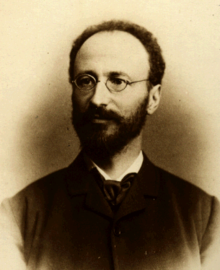

" LIBERAE SUNT NOSTRAE COGITATIONES."
Escuela Austriaca

Eugen von Böhm-Bawerk(Padre de la Escuela Austriaca)
Aqui entraremos en el terreno de las ideas de la Escuela Austriaca, esta escuela tiene puntos incluso muy extremos a priori pero tiene muchos puntos importantes en el terreno tanto economico como libertario.
Eugen von Böhm-Bawerk (Brno, 12 de febrero de 1851 - Viena, 27 de agosto de 1914) fue un economista y político austrohúngaro que contribuyó de forma destacada al desarrollo de la Escuela Austríaca de Economía.Aunque fue un economista liberal, estuvo alejado de las posiciones radicales libertarias que la Escuela austríaca sugiere hoy en día. Dejó escrito que la libre competencia sin ningún tipo de límites llevaría al caos en la producción y el consumo. También argumentó incisivas críticas contra la obra de Karl Marx. Los aportes de este autor fueron varios, pero la más relevante es su teoría del capital, en donde introduce algunas consideraciones acerca del tiempo. Parte de que la producción se realiza por dos métodos: uno directo, en el que los medios son recursos tales como trabajo y materias primas y se da una producción inmediata del tipo «Robinson Crusoe», y otro indirecto, en el que los recursos que se usan en el método directo pasan a combinarse y a acumularse, dando origen a lo que es la producción de capital. Bawerk estableció que el método indirecto era el modo más efectivo, y si bien tenía la aparente desventaja de consumir un tiempo mayor, se podía realmente asegurar que a mayor tiempo, mayor producción (caso extremo de método más indirecto e intensivo), lo cual en realidad se convierte en una ventaja.
La Escuela Austríaca se originó en Viena en 1871 con la publicación de Principios de Economía de Carl Menger. Se trata de una posición heterodoxa basada principalmente en el individualismo metodológico y en el subjetivismo. Sus recomendaciones de política económica suelen ser anti-intervencionistas. La base de la Escuela Austríaca es el individualismo metodológico, es decir, que todos los fenómenos sociales con explicables por las acciones de los individuos. Siguiendo dicho método, rechazan la matematización de la economía y el empirismo, optando por realizar deducciones a partir de axiomas autoevidentes o hechos irrefutables. A este método, desarrollado por Ludwig von Mises en La Acción Humana, se lo denomina praxeología. También rechazan la división entre macroeconomía y microeconomía, ya que consideran que la segunda debe explicar la primera. Otra aportación, fruto del constante criticismo hacia otras escuelas de pensamiento, es el teorema de la imposibilidad del socialismo. Desarrollado principalmente por Mises y Hayek, el teorema dice que el socialismo es inviable teóricamente debido a los problemas de información que presenta. Según estos autores, los precios recogen una gran cantidad de información individual, subjetiva y tácita sobre las valoraciones de cada individuo que permite guiar la asignación de recursos. Al no existir precios de mercado ni beneficios, los planificadores socialistas no podrán obtener esta información y asignarán recursos de forma inevitablemente ineficiente.
Una de las aportaciones más importantes de la Escuela Austríaca es su explicación del ciclo económico. Según la teoría austríaca del ciclo económico, los ciclos se inician por una expansión artificial del crédito no respaldada por ahorro previo. Esto es lo que ocurre cuando los bancos centrales bajan tipos de interés o imprimen moneda. Los tipos de interés bajos hacen que se produzca un exceso de inversión en actividades que con tipos de interés a niveles normales no hubiesen resultado viables. Esto genera un falso auge económico, una burbuja, que se pincha cuando se corta el crédito barato. Los recursos (capital y trabajo) destinados a la burbuja deben reasginarse a proyectos realmente productivos. Pero como los bienes de capital son heterogéneos y no pueden reasignarse de un sector a otro con facilidad, el ajuste generará pérdidas de valor y, por lo tanto, una depresión.
Problemas que tiene en la actualidad
Su gran problema siempre ha sido y es su posición radical a la no existencia del estado, si no que la sociedad viva bajo un sistema anarquista y esto hace aguas por muchas partes, pues deja muchos puntos abiertos sobre como una sociedad podria administrar ciuedades, pueblos, leyes etc.
El otro problema es el caos que sembró la izquierda anarquista, la cual ha roto su significado de forma brusca y ha hecho ver un sistema que en todo caso busca la libertad individual a situaciones de extrema violencia, marchas provocadoras, gente con ideas incluso inhumanas o simplemente analfabetos funcionales que hacen dar una imagen terrible a los grupos libertarios.
Con estas dos piezas puestas en la mesa es fácil compreder las debilidades de estas ideas y el porque la gente proxima a estas ideas prefiera acercarse a ideas mas liberales la cual conserva al estado pero limitando al maximo posible sus funciones, que la única sea proteger la libertad de su población y sus intereses.